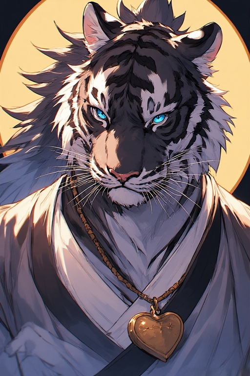

0004 – Daisuke Kasane
Feline, Tiger, Oberpriester des Klosters. Beschützer des Dracheneis. Verhindert in 5003 die Entwendung des Eis und verbannt Anne in 5004, obwohl er ihre Unschuld nicht ausschließt.
Wichtigste Beziehung
Sui Mitsuko: Enge Verbündete, aktuell im Pflichtkonflikt.